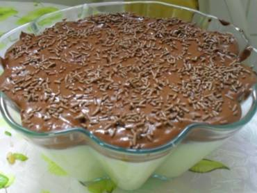

Prestígio
Autor: Ana Benati

Prestígio Caseiro de Travessa.
Tempo de Preparação: 140 minutos
Rendimento: 12 porções
Informação Nutricional:
250 kcal,
50 g
Ingredientes:
-
1 lata de leite condensado
-
2 pacotes de coco ralado
-
200 ml de creme de leite fresco
-
1/2 litro de leite
-
1 colher (sopa) de margarina
-
5 colheres de achocolatado em pó
-
2 colheres (sopa) de amido de milho
Modo de Preparo:
1. Coloque em uma panela o leite condensado, o coco, o leite, o amido de milho e leve ao fogo.
2. Pode ser cozido em qualquer temperatura,o ponto certo desse creme é quando ele estiver parecido com um mingau.
3. Depois de pronto coloque em um refratário e reserve.
4. Em outra panela coloque a margarina, o achocolatado e o creme de leite.
5. Leve ao fogo até levantar fervura.
6. Quando pronto, coloque em cima do primeiro creme que está no refratário, com cuidado para não misturá-los.
7. Leve à geladeira por 2 horas.
Se preferir, coloque chocolate granulado em cima do último creme para enfeitar
72 pessoas avaliaram essa receita
...